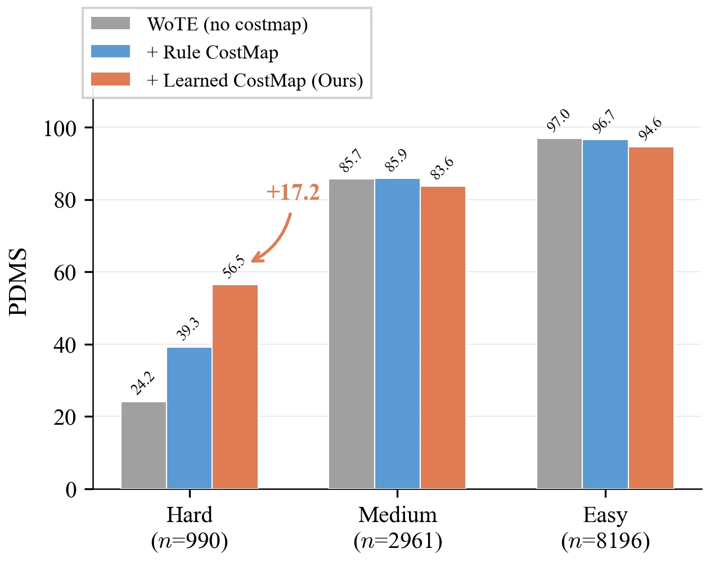

WORLD MODELS & PREDICTION · 2026
PLAN-S
Bridging Planning with Latent Style Dynamics for Autonomous Driving World Models
- Intelligent Transportation Thrust, Systems Hub, and Center of Seamless Connectivity & Connected Intelligence, The Hong Kong University of Science and Technology (Guangzhou)
- *Corresponding author
![Top: three camera views of a straight urban street with a truck in the adjacent lane on the left and a row of parked cars on the right. Bottom: three bird's-eye-view cost-map overlays of the same scene, labelled Conservative, Neutral and Aggressive, each with a red dashed circle around the area ahead of the ego vehicle, between the truck and the parked cars. The blue high-cost regions around the surrounding vehicles are widest under the conservative setting and narrowest under the aggressive one, while the red low-cost corridor along the ego lane stays in place.](assets/media/style-cost-maps.webp)
navtest scene: a straight urban
road with parked vehicles and a truck in the adjacent lane. Top: front-view scene
context. Bottom: BEV cost-map overlays under conservative, neutral and aggressive
style codes; blue tones are higher cost, red tones lower cost. The high-cost regions
near surrounding vehicles expand under the conservative code and contract under the
aggressive one, while the low-cost drivable corridor stays aligned with the ego lane.
Red dashed circles mark where the change is visible.
Fig. 4 of the paper.
OVERVIEW
Driving style as a cost map the planner reads before it decides
Latent world models forecast compact scene dynamics, and planners built on them usually produce a trajectory directly from that entangled latent. Risk, drivability and driving-style preferences stay implicit, so they are hard to supervise, inspect or modulate before a trajectory is selected. PLAN-S (PLANning with latent Style dynamics) is a bridge between the latent and the planning head: it decodes a four-channel semantic cost map, conditioned on ego state and driving style, which the planner consumes before its final decision. With the host backbones frozen, it lowers L2 at every horizon and the 3 s collision rate from 0.43% to 0.25% on nuScenes. On NAVSIM, PDMS rises from 88.3 to 89.4 with a hand-designed rule cost and to 89.1 with the learned cost map.
-
01
An explicit, inspectable intermediate
Four semantic channels on the BEV grid: dynamic obstacles, off-road regions, static obstacles and drivability. Each can be supervised, visualized and ablated.
-
02
Style enters before the decision
Ego state and a driving-style code modulate the cost map through separate AdaFiLM pathways, instead of adjusting the output trajectory after the fact.
-
03
One contract, two planner families
Attention-level fusion for regression planners and reward-level fusion for anchor-score planners, without modifying the host backbone.
METHOD
A style-conditioned cost map between the latent and the planning head
The module takes the host's BEV feature map, the ego state (velocity, yaw rate, acceleration) and a driving-style code. Dual AdaFiLM modulates the feature with the two conditions, and a lightweight convolutional head decodes the four cost channels on the host's own BEV grid. Drivability is a positive, inverse-cost signal for preferred lanes and route-aligned cells; the other three channels mark what should be avoided. Where an auxiliary target is available, each channel is supervised with a binary cross-entropy loss. The planner then reads the cost map through an interface matched to its family.
![Two panels. (a) LWM-based environment prediction, marked frozen: multi-view images and LiDAR pass through a perception encoder to a BEV feature at time T; a latent world model takes it together with the ego status and outputs the future BEV feature at T+1. (b) Style-fused planning strategy, marked trainable: in the style-fused cost-map head, the BEV feature passes through a spatial encoder, dual AdaFiLM conditioned on ego status and a driving-style feature, and a cost-map decoder. The resulting cost map is combined with trajectory anchors in an anchor-score planner, or with waypoint queries in a regression planner through prior fusion and refinement, to give the output trajectory.](assets/media/framework.webp)
-
Driving-style code
For the regression host, a GRU encodes the ego's kinematic history (position, heading, speed, acceleration) into a 64-dimensional embedding. For the anchor-score host, the code is a deterministic two-dimensional score in [0, 1]², for longitudinal and lateral aggressiveness.
-
Dual AdaFiLM
The conditioned feature channels are split into two fixed, equal groups. One is scaled and shifted by the style code, the other by the ego state, each through its own two-layer MLP, so the two effects stay separate at the point of conditioning.
-
Attention-level fusion
For regression planners. Waypoint queries first cross-attend to the position-encoded cost map, which gives a cost-conditioned prior. During deformable refinement, each attention head is gated by one cost channel at the sampled location.
-
Reward-level fusion
For anchor-score planners. Cost logits are sampled bilinearly along the waypoints of each of the 256 anchors, with weight +1 for the three obstacle channels and −1 for drivability. The per-anchor cost is added to the native anchor reward as a log-space penalty.
RESULTS
A regression planner on nuScenes, an anchor-score planner on NAVSIM
The regression interface is tested with ResWorld on nuScenes (official split of 700
training and 150 validation scenes; L2 displacement error and collision rate at 1,
2 and 3 s). The anchor-score interface is tested with WoTE on NAVSIM (trained
on navtrain, evaluated on navtest; Predictive Driver Model
Score, PDMS). Each host is evaluated in its standard protocol. The host backbones
are frozen, and the two instantiations are trained independently, without weight
transfer.
- nuScenes · Average L2
- 0.55 m
- From 0.59 m for the ResWorld baseline with ego-status inputs; lower at 1, 2 and 3 s. Table I.
- nuScenes · Collision rate, 3 s
- 0.25%
- From 0.43% for the same baseline; the average over the three horizons falls from 0.17% to 0.11%. Table I.
- NAVSIM · PDMS
- 89.4
- Rule-cost variant; 89.1 with the learned cost map, 88.3 for the WoTE host. Table V.
- NAVSIM · Hard scenes
- 56.47
- PDMS of the learned cost map on the 990 scenes where WoTE scores below 0.7; 39.27 with the rule cost. Table VIII.
nuScenes
Against the ResWorld baseline with ego-status inputs, PLAN-S lowers average L2 from 0.59 to 0.55 m. The larger change is in collision rate: from 0.43% to 0.25% at 3 s, and from 0.17% to 0.11% on average.
Table I of the paper: regression-planner results on nuScenes val. L2 is per-second endpoint displacement, with Avg the simple mean of the three horizons. Collision rate is the percentage of trajectories that collide within the horizon.
| Method | Auxiliary task | L2 ↓ (m) | Collision rate ↓ (%) | ||||||
|---|---|---|---|---|---|---|---|---|---|
| 1 s | 2 s | 3 s | Avg | 1 s | 2 s | 3 s | Avg | ||
| ST-P3 | Det & Map | 1.72 | 3.26 | 4.86 | 3.28 | 0.44 | 1.08 | 3.01 | 1.51 |
| UniAD | Det & Track & Map & Motion & Occ | 0.48 | 0.96 | 1.65 | 1.03 | 0.05 | 0.17 | 0.71 | 0.31 |
| OccNet | Det & Map & Occ | 1.29 | 2.13 | 2.99 | 2.14 | 0.21 | 0.59 | 1.37 | 0.72 |
| PARA-Drive | Det & Track & Map & Motion & Occ | 0.40 | 0.77 | 1.31 | 0.83 | 0.07 | 0.25 | 0.60 | 0.30 |
| GenAD | Det & Map & Motion | 0.36 | 0.83 | 1.55 | 0.91 | 0.06 | 0.23 | 1.00 | 0.43 |
| SSR ∗ | None | 0.25 | 0.64 | 1.33 | 0.74 | 0.08 | 0.12 | 0.72 | 0.31 |
| ResWorld | None | 0.22 | 0.56 | 1.17 | 0.65 | 0.02 | 0.04 | 0.64 | 0.23 |
| ResWorld ◇ | None | 0.19 | 0.50 | 1.08 | 0.59 | 0.02 | 0.06 | 0.43 | 0.17 |
| PLAN-S | Cost map | 0.17 | 0.46 | 1.01 | 0.55 | 0.02 | 0.06 | 0.25 | 0.11 |
◇ Ego-status inputs following BEVPlanner++. ∗ Officially released model. Bold values are the best in each column, including ties.
NAVSIM
Both variants improve on WoTE. The gain comes mainly from time-to-collision, which rises from 94.9 to 97.7 with the rule cost and 97.5 with the learned cost map; the other sub-metrics stay within 0.3 points of WoTE.
Table V of the paper: anchor-score results on NAVSIM navtest, including the baseline set from the WoTE evaluation. Input: C camera, L LiDAR, Ego ego state only. NC: no collision; DAC: drivable-area compliance; EP: ego progress; TTC: time to collision; Cmf: comfort.
| Method | Input | NC ↑ | DAC ↑ | EP ↑ | TTC ↑ | Cmf ↑ | PDMS ↑ |
|---|---|---|---|---|---|---|---|
| Human | – | 100.0 | 100.0 | 87.5 | 100.0 | 99.9 | 94.8 |
| Constant Velocity | – | 69.9 | 58.8 | 49.3 | 49.3 | 100.0 | 21.6 |
| Ego Status MLP | Ego | 93.0 | 77.3 | 62.8 | 83.6 | 100.0 | 65.6 |
| VADv2 | C | 97.9 | 91.7 | 77.6 | 92.9 | 100.0 | 83.0 |
| UniAD | C | 97.8 | 91.9 | 78.8 | 92.9 | 100.0 | 83.4 |
| LTF | C | 97.4 | 92.8 | 79.0 | 92.4 | 100.0 | 83.8 |
| PARA-Drive | C | 97.9 | 92.4 | 79.3 | 93.0 | 99.8 | 84.0 |
| TransFuser | C+L | 97.7 | 92.8 | 79.2 | 92.8 | 100.0 | 84.0 |
| LAW | C | 96.4 | 95.4 | 81.7 | 88.7 | 99.9 | 84.6 |
| DRAMA | C+L | 98.0 | 93.1 | 80.1 | 94.8 | 100.0 | 85.5 |
| Hydra-MDP | C+L | 98.3 | 96.0 | 78.7 | 94.6 | 100.0 | 86.5 |
| WoTE | C+L | 98.5 | 96.8 | 81.9 | 94.9 | 99.9 | 88.3 |
| PLAN-S (rule) | C+L | 98.5 | 96.8 | 81.7 | 97.7 | 100.0 | 89.4 |
| PLAN-S (learned) | C+L | 98.3 | 96.5 | 81.6 | 97.5 | 100.0 | 89.1 |
PLAN-S (rule) fuses a hand-designed cost into the anchor reward; PLAN-S (learned) uses the learned style-conditioned cost map. Bold values are the best non-human results, including ties.
Where the learned cost map helps
Easy scenes dominate navtest, so the aggregate score can hide where the
learned cost map matters. With scenes grouped by the PDMS of the reproduced WoTE
baseline, the learned cost map scores 56.47 on the 990 hard scenes, against 39.27
for the rule cost and 24.18 for WoTE; the rule cost stays ahead on the 2,961 medium
and 8,196 easy scenes (Table VIII). On the hard subset the learned variant
exceeds the rule cost by 25.8 points in drivable-area compliance, 27.3 in ego
progress and 13.8 in time-to-collision (Table IX). An oracle that picks the
better of the two variants per scene reaches 91.78 PDMS; it uses evaluation-time
scores and is an analysis tool, not a deployable model (Table X).

navtest: hard (PDMS below 0.7), medium (0.7–0.9) and easy (0.9 and above). Fig. 2 of the paper.![Top: left, front and right camera views of a curved street lined with parked cars, with a green predicted trajectory and a red ground-truth trajectory drawn on the front view. Bottom: three bird's-eye views of the same intersection, labelled DiffusionDrive, PLAN-S, and PLAN-S and CostMap. A red dashed circle marks where the planned path passes the parked vehicles in the first two; the third overlays the cost map, red along the drivable corridor and blue around vehicles and beyond the road boundary.](assets/media/qualitative.webp)
navtest scene at a curved urban intersection. Top: multi-view inputs with the front-view trajectory overlay (green: model prediction, red: ground truth). Bottom: BEV outputs for DiffusionDrive, PLAN-S, and PLAN-S with the learned cost map overlaid; red tones are lower cost, blue tones higher cost. Fig. 3 of the paper.Inference time
On the ResWorld host the cost-map decoder adds 0.25 million parameters (+0.3%), from 81.16 to 81.41 million. On a single NVIDIA H100 the paper measures 59.0 ms (17.0 FPS) for PLAN-S and 64.8 ms (15.4 FPS) for the ResWorld baseline (Table IV).
Ablations and scope
On nuScenes, adding the cost map without AdaFiLM lowers the average collision rate from 0.157% to 0.137% and the full model reaches 0.111%, while average L2 moves only from 0.551 to 0.545 m. The upstream and downstream interfaces give the lowest collision rate when used together (Tables II and III). On NAVSIM, all three cost-map sources improve on WoTE, and removing the cost-map supervision or the style branch does not lower aggregate PDMS (Tables VI and VII).
The paper states the boundary of this evidence. The results cover one regression host and one anchor-score host, with host-specific adapters, resolutions, auxiliary targets and independently trained weights; they support representative portability rather than host-agnostic deployment. The benchmarks used do not measure style matching: style conditioning is shown qualitatively, in the figure at the top of this page, with three preset style codes, (0.0, 0.0), (0.5, 0.5) and (1.0, 1.0), rather than human style labels. Additional hosts, multi-seed statistics and quantitative style metrics are left to future work.
CITATION
@misc{qiu2026plans,
title={PLAN-S: Bridging Planning with Latent Style Dynamics for
Autonomous Driving World Models},
author={Xiaoyun Qiu and Jingtao He and Yijie Chen and Yusong Huang and
Haotian Wang and Yixuan Wang and Xinhu Zheng},
year={2026},
eprint={2606.06014},
archivePrefix={arXiv},
primaryClass={cs.AI},
url={https://arxiv.org/abs/2606.06014},
}